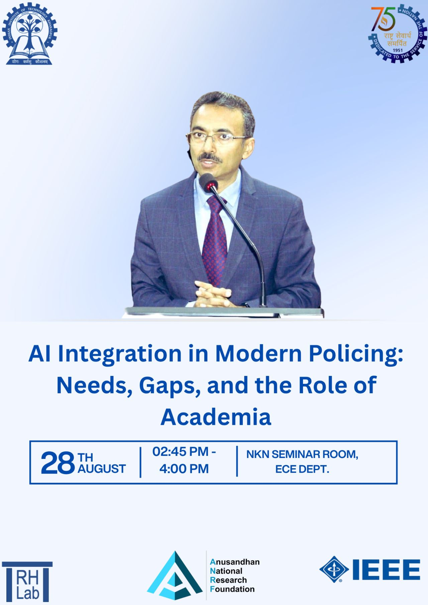

IdoAI Events & Archive
View our next upcoming talk highlight, all past events with slides and references.
Next Upcoming Event
Medical Computer Vision for the Clinic: Gallbladder Cancer and Beyond

The deployment of machine learning in clinical settings is fundamentally constrained by noisy data, domain shifts, and the necessity for absolute diagnostic trust. In this seminar, we will explore some of the foundational successes in diagnosing Gallbladder Cancer (GBC) from handheld ultrasound imagery with deep learning and computer vision techniques. By injecting domain-specific inductive biases through architectures like GBCNet and FocusMAE, we demonstrated that specialized computer vision models can overcome the inherent artifacts of ultrasound, match expert radiologist performance, and transition to prospective clinical testing.
However, scaling these specialized architectures for widespread clinical deployment reveals new challenges in medical image analysis. We will outline the lab's roadmap to overcome these bottlenecks by transitioning toward unified, adaptive models that define the next generation of medical computer vision. We will discuss our active research and highlight opportunities for researchers interested in building robust, deployable medical computer vision systems from the ground up.
Recent Events (2026)
Recent 2026 departmental talk sessions and full abstracts

Abstract: Responsible investing aims to generate positive impact across Environment (E), Society (S), and Governance (G), and rating companies along these dimensions is now widespread, making ESG scores highly popular. Current ESG solutions cannot model high-dimensional, multimodal time series capturing the joint evolution of ESG risks, financial returns, news, and sentiment, even though this domain requires jointly reasoning over distinct numerical signals where both numerical proximity and semantic type must be preserved. In this talk, we discuss a novel domain-aware representation learning framework that learns geometry-preserving representations for heterogeneous time series. The resulting model jointly learns to forecast future values and to organize entities in a representation space that reflects their temporal evolution. Trained on ESG, returns, news, and sentiment, the domain-aware LLM learns a representation space that enables downstream applications such as latent-space search for superior asset selection and portfolio rebalancing.

Abstract: Artificial Intelligence (AI) is reshaping modern policing by enabling faster data analysis, improved investigation support, better resource allocation, and more responsive public-safety operations. Emerging field technologies at the intersection of AI and robotics demonstrate AI's potential to support surveillance, hazardous-area inspection, and search-and-rescue tasks while reducing risk to personnel.
However, adopting AI brings challenges such as algorithmic bias, privacy concerns, cybersecurity risks, and safety assurances. There are also significant gaps in data quality, interoperability, multilingual and multimodal processing, explainability, validation, evidentiary reliability, and institutional capacity.
This talk examines the need for safe and responsible AI integration in policing and identifies the technical, legal, and ethical gaps that require attention. It also highlights academia's role in developing trustworthy, context-sensitive systems, independently validating their performance, training personnel, and shaping policy. The emphasis will be on a problem-first, pilot-before-scale approach. AI should support (not replace) human judgment, constitutional values, and public trust in policing. The talk will consider strengthening AI literacy among police personnel and building sustained police–academia–technology partnerships.
Speaker Bio: Anil Kishore Yadav is a senior IPS officer presently serving as Director, Central Academy for Police Training, Bhopal, BPR&D under the Ministry of Home Affairs, Government of India. With a diverse academic background including a diploma in Civil Engineering, an MA in English, an MA in sociology, and an LLB, he has held many administrative roles, including Superintendent of Police in Saharsa, Bettiah, Jehanabad, Gopalganj, Madhepura, Katihar, Nawada, and Bhojpur districts; DIG Munger Range; IG, ADG CID (Weaker Sections); and IG, ADG (Training), in Bihar. He plays an active role as a master trainer on new criminal laws, training various pillars of the criminal justice delivery system nationwide, including judges, prison and correctional services officers, prosecutors, police officers, and forensic experts. He has delivered lectures in the National Judicial Academy India, Bhopal; various state judicial academies; IIM; LBSNAA, Mussoorie; etc. He is also contributing to awareness of new criminal laws through various platforms like Door Darshan.
Abstract: Understanding human behaviour is essential for effective communication and social interaction. Gestural cues such as eye gaze, facial expressions, and body movements offer deep insights into complex mental and emotional states. Accurately capturing and modelling these cues in unconstrained environments remains a significant challenge due to data annotation complexity, variability in human behaviour, and computational limitations. My research focuses on developing robust computational models that can automatically learn and interpret non-verbal gestural cues in naturalistic, real-world scenarios, with minimal supervision. These models aim to bridge the gap between human cognitive understanding and machine perception, making AI systems more socially aware and context-sensitive.
My work has wide-ranging applications in real-world settings, including monitoring student engagement in classrooms, assessing group cohesion in collaborative environments, detecting emergent leaders, identifying dominant individuals in discussions, and analysing crowd behaviour. By advancing automatic behaviour understanding 'in-the-wild', my research contributes to building more adaptive and human-centric AI systems capable of functioning effectively in everyday social environments.
Abstract: Obscuring sensitive data from adversarial eavesdropping in distributed decision-making is a significant challenge across a range of applications, including smart grids, autonomous vehicle coordination, and multi-robot surveillance. Existing methods—such as encryption or differential privacy—modify transmitted messages without considering the underlying dynamics of the cyber-physical processes that generate the data, nor the capabilities of potential adversaries. In our recent work, we demonstrate that every dynamical system possesses an inherent system-level privacy that can be harnessed through the design of intelligent inter-agent communication protocols.
In this talk, I will present our recent results on extracting system-level privacy in the presence of eavesdropping adversaries. We derive analytical expressions that quantify the level of protection as a function of both the adversary's capabilities and the agent communication graph. Finally, I will show how these results can be applied in the context of distributed optimization and federated learning.
Speaker Bio: Dipankar Maity is an Assistant Professor in the Department of Electrical and Computer Engineering at the University of North Carolina at Charlotte. He earned his B.E. degree in Electronics and Telecommunication Engineering from Jadavpur University, India, in 2013, and his Ph.D. degree in Electrical Engineering from the University of Maryland at College Park, in 2018. Following his doctoral studies, he was a Postdoctoral Fellow at the Georgia Institute of Technology. He has been a visiting scholar at the Technical University of Munich, Germany, and at the KTH Royal Institute of Technology, Sweden. He is a member of the IEEE Control System Society Technical Committee on Security and Privacy. He is an Associate Editor for the IEEE Control Systems Letters journal.
Abstract: In December 2023, a Chevrolet dealership chatbot agreed to sell a car for $1, even declaring it a “legally binding offer.” While the dealership quickly corrected the error, the system was doing exactly what it was designed to do: optimise a loss function over token sequences, without any concept of margins, compliance, or risk.
This incident underscores a critical challenge for enterprises: the disconnect between probabilistic AI models and deterministic business imperatives. Generative AI does not “think” in terms of revenue, liability, or brand, it optimizes probabilities in a mathematical space and subjects them to the laws of chance.
This talk demystifies the hype and exposes the engineering reality. We will explore how Large Language Models rely on high-dimensional geometric transformations rather than logical reasoning. When a model “hallucinates,” it is not malfunctioning, it is extrapolating into sparse regions of its training manifold where patterns are unreliable. This is a structural property of the model, not a coding flaw.
We will connect these principles to real-world deployment strategies through three business-focused case studies:
- The Alignment Problem: Why semantic similarity fails to enforce business logic and compliance.
- The Architecture of Failure: Two examples where economic incentives collide with optimisation dynamics, resulting in costly missteps.
- A New Deployment Framework: Practical methods to align stochastic model behaviour with deterministic business goals.
Our goal is to equip decision makers with a mental model grounded in both mathematics and market reality. The organisations winning with GenAI are not those treating it as magic, they are those engineering it to serve strategy, safeguard margins, and scale responsibly.
Inaugural IdoAI Event 21 July 2025
The Department of Artificial Intelligence launched the event series Interdisciplinary Opportunities with AI (IdoAI) to explore how AI is transforming diverse domains such as healthcare, law, climate science, linguistics, and the arts. Each event brings together experts from different disciplines to discuss their work at the intersection of AI and their fields. The first event was held on 21 July 2025.
Schedule • Monday, 21 July 2025
| Time | Venue | Event |
|---|---|---|
| 9:30 AM | CRR 501 | A Spatially Explicit Agent-Based Modeling Approach to Evaluating Routing Strategies for Emergency Evacuation Dr. Rebecca Vandewalle |
| 10:30 AM | CRR 501 | Modeling, estimation, and control strategies for an octopus-inspired soft arm Prof. Udit Halder |
| 11:30 AM – 12:30 PM | CRR 501 | Artificial Intelligence for Insect Biodiversity: Friends, Foes, and Futures Dr. Debika Bhunia |
| 2:30 – 4:30 PM | AI Board Room | Group meeting Mr. Mohammad Saif |
| 7:00 PM | Online | “AI as Normal Technology” Mr. Sayash Kapoor |
Talks & Sessions Open a talk for its abstract and speaker bio
Abstract: Recent crises, such as wildfires in the western USA, underscore complex and non-obvious interrelationships between human actions and impacts. Wildfire poses an increasingly serious threat due to a combination of climate change and human factors. During a wildfire, evacuation is commonly recommended to reduce the risk of injury or death. Although ideally an evacuation should finish as quickly as possible, certain traffic patterns that occur during an evacuation can cause significant delays. A better understanding of evacuation processes is needed to determine which actions may alleviate the congestion that causes these delays.
Agent-based models (ABMs) are powerful tools for modeling complex human dynamics at an individual level. Spatial agent-based models can be scaled up to handle large study areas, massive agent numbers, and complex agent-environment interactions needed to address real world challenges. Due to a lack of wildfire evacuation data, many evacuation models rely heavily on heuristics about evacuee behavior, especially for inferring evacuee wayfinding and routing decisions. Extensive investigations assume that an evacuee takes the shortest or quickest path to the nearest exit. However, this assumption poorly matches both surveyed evacuee preferences and congestion patterns in real-world evacuation traffic.
Using an agent-based model of vehicle evacuation, this study assesses the effects of choosing different routing strategies on evacuation clearance times and traffic patterns. Specifically, driving strategies that preferentially select the shortest path, the quickest path, and a path more likely to contain major roads are compared. The results indicate that there are marked differences between clearance times and evacuation curves, as well as different spatiotemporal patterns of traffic congestion between these strategies. These findings suggest that the shortest or quickest path routing strategy may underestimate evacuation durations and cause areas of high congestion in less likely locations and times.
Speaker Bio: Dr. Rebecca C. (Becky) Vandewalle is an incoming Assistant Professor in the School of Information at the University of South Florida, starting in Fall 2025. She graduated from the University of Illinois Urbana-Champaign in 2025 with a PhD degree in Geography. Dr. Vandewalle earned her MSc in GIS and Archaeology from the University of Edinburgh, completed a Post-Baccalaureate program in Classics at the University of Pennsylvania, and earned her Bachelors degree in Greek and Roman Studies from Rhodes College. Her research interests include crisis informatics, data science and decision support in complex socio-technical contexts, high-performance computing, and large-scale geospatial simulation.
Abstract: Due to their extraordinary ability to coordinate large numbers of degrees of freedom, soft-bodied marine animals, especially octopuses, remain great sources of amazement, mystery, and inspiration. Their softness challenges our understanding of controlling highly flexible systems, while their distributed neuroanatomy raises questions about sensory information processing and motor control. Insights from octopus studies can inspire advancements in soft robotics and medical technology, offering transformative benefits across multiple fields.
In this talk, I will present our work on an octopus-inspired soft arm, including modeling, estimation, and various control strategies (open-loop and feedback). First, I will present a mathematical model of a soft muscular arm using the formalism of Cosserat rod theory. The flexible rod dynamical equations are understood in terms of the stored energy content (potential energy), leading to an energy-shaping control (open-loop) method that accomplishes various manipulation tasks. Next, I will show how energy-based ideas can be used in shape estimation of slender soft-bodied systems from video recordings, with applications in soft robotics and octopus arms. Finally, I will introduce the fascinating ways octopuses are believed to use their various sensory capabilities in target-oriented motor control. I will finish by presenting a novel bioinspired sensory feedback control strategy that may explain stereotypical octopus arm movements.
Speaker Bio: Dr. Udit Halder is an Assistant Professor in the Department of Mechanical and Aerospace Engineering of the University of South Florida. Prior to joining USF, he was a postdoctoral research associate at the University of Illinois Urbana-Champaign. Dr. Halder earned his Ph.D. and M.S. degrees in Electrical Engineering from the University of Maryland, College Park; and his B.E. degree in Electronics and Telecommunication Engineering from Jadavpur University, Kolkata. His research interests range from the collective behavior of natural flocks to the motion of soft-bodied marine animals, with applications in robotics. His research has been published in prestigious journals and conferences, and it has received coverage from a variety of media outlets.
Abstract: Biodiversity crisis, steering the direction towards the sixth mass extinction. The rate at which species are disappearing now outpaces the rate at which we're discovering them. Insects, the most diverse group on Earth, are particularly under threat, with beetles boasting the highest number of known species. However, a shortage of trained taxonomists means many lesser-known insect groups remain largely unexplored.
Artificial intelligence (AI) offers a promising path forward for biodiversity exploration. While current apps like iNaturalist use image-based AI models to successfully identify well-known insect groups, they struggle with species for which data is scarce. Specialized AI models could overcome this by focusing on specific morphological features like antennae, wing venation, elytra, and reproductive structures. This would be particularly beneficial for ecologically vital insect groups such as beetles, bugs, and bees. Therefore, developing such a specialized AI model is crucial right now.
Insects are undeniably our allies. They play critical roles in pollination, nutrient cycling, and broader ecological processes. Pollination, far from just a fascinating natural phenomenon, is an essential function for survival. Without pollinators, neither humans nor Earth's terrestrial ecosystems could persist. Out of the crop plants grown globally, which provide all our food and plant-based industrial products are nearly 80% depend on animal pollination. Bee visits and other pollinator activities also lead to larger, more flavorful fruits and significantly higher crop yields. To better understand these vital processes, quantum dots are emerging as a revolutionary tool. These tiny particles glow brightly under UV light, allowing us to label and trace individual pollen grains. However, the sheer volume of data generated i.e, images of pollen on stigmas, on insect bodies, and in the air, is too vast for manual analysis. This is where AI, particularly computer vision and machine learning, becomes indispensable. AI can analyze this deluge of data, helping us to unravel the complex dynamics of pollination.
Conversely, insects can also be our adversaries, acting as noxious pests that inflict immense agricultural and economic losses. To ensure a sustainable future, it's vital to forecast their spatial and temporal distribution patterns. Species distribution models can predict current and future insect distributions using climatic and environmental data. Similarly, Agent-based models are modern tools for simulating complex scenarios like pest-host interactions. These models rely on predefined parameters such as birth rates, death rates, feeding rates, and migration rates within a spatially and temporally explicit context.
Speaker Bio: Dr. Debika Bhunia is an entomologist with a Ph.D. from the University of Kalyani and the Zoological Survey of India, focusing on the taxonomy and identification of phytophagous scarabs. She has been awarded the CSIR-SRF Direct 2024 and the "Ernst Mayr Travel Grants in Animal Systematics" from Harvard University's Museum of Comparative Zoology, Student Grant from Punjab University, best oral presentation at Animal Taxonomic Summit 2023, By MOEFCC. An active member of the Royal Entomological Society, London. Dr. Bhunia boasts an impressive publication record of 40 papers, two books, an h-index of 6, and 127 citations, and is credited with the discovery of 20 new species of Indian phytophagous beetles. She has also conducted numerous field surveys throughout various districts of West Bengal, India. She has completed research visits to prestigious institutions such as Museum Alexander Koenig in Bonn, Germany and Muséum National d'Histoire naturelle in Paris, France. Her discoveries received significant media attention in leading newspapers like Statesman, Times of India, Bartaman, Ananda Bazar Patrika, Press Trust of India and Press Information Bureau (PIB).
Background & Details: A group meeting with Mr. Mohammad Saif in the AI Board Room on applications of artificial intelligence to critical challenges in the Indian railway sector.
Speaker Bio: Mohammad Saif is Chief Mechanical Engineer for Planning and Projects at North Central Railways of Indian Railways. He graduated in Mechanical Engineering from IIT-Roorkee (formerly University of Roorkee) and holds a Masters Degree in Railway Engineering from KTH Stockholm. He is credited with the design of special freight vehicles for the Ministry of Defence, specialized wagons for the steel industry, and the indigenous development of a quick draw gear for slackless draw bars. He has also served as a member of the National Security Council Secretariat under the Ministry of Defence, where he contributed to strategic railway research. His research interest lies in railway vehicle dynamics, development of high speed bogies for freight vehicles and the application of artificial intelligence to address critical challenges in the Indian railway sector.
Abstract: In this talk, I will articulate a vision of artificial intelligence as “normal technology,” in contrast to both utopian and dystopian visions that treat AI as a potentially superintelligent entity. I will argue that the impacts of advanced AI, even if transformative, will unfold slowly, making a critical distinction between AI methods, AI applications, and AI adoption. I will discuss a potential division of labor between people and AI in a world with advanced AI and examine the implications of AI as normal technology for AI policy, AI safety, and human progress.
Speaker Bio: Sayash Kapoor is a Senior Fellow at Mozilla, a Laurance S. Rockefeller Fellow in the Princeton University Center for Human Values, and a computer science Ph.D. candidate at Princeton University's Center for Information Technology Policy. He is a coauthor of AI Snake Oil, one of Nature's 10 best books of 2024. His newsletter by the same name is read by over 50,000 AI enthusiasts, researchers, policymakers, and journalists. His work has been published in leading scientific journals such as Science and PNAS. He has written for mainstream outlets including The Wall Street Journal and WIRED and his work has been featured in The New York Times, The Atlantic, Washington Post, Bloomberg, and many others. Kapoor has been recognized with various awards, including a best paper award at ACM FAccT, an impact recognition award at ACM CSCW, and inclusion in TIME's inaugural list of the 100 most influential people in AI.
Event Archive (2024 & Prior)
In 2024, the departmental reading group was initiated under the name PANDA (Paper Analysis and Discussion in AI). Complete collection of past talks, slides, paper references, and abstracts from 2024 are given below:
Abstract: Modern automation increasingly relies on robots capable of precise and flexible manipulation in unknown environments. This work presents a collaborative pick-and-place system using the Mycobot 280 Jetson manipulator integrated with ROS MoveIt, designed for complex object handling using vision.
The system utilizes ROS MoveIt for motion planning, collision avoidance, and kinematics computation to control the manipulator. Stereo vision with dual RGB cameras generates point clouds, enabling YOLOv8 to perform real-time object detection. DBSCAN clustering localizes objects in 3D space, providing coordinates for manipulation.
The manipulator operates through ROS scripts to execute pick-and-place tasks, with real-time tracking feedback allowing adjustments during operation. The system includes human activity imitation by analyzing video input to replicate human-object interactions, such as placing objects into bins or handing them to users.
Abstract: In this talk, we'll be discussing practical training methods that can help you achieve improved performance in no time on any Deep Learning task.
Abstract: The talk was on Biasness and its different forms that plague the current algorithmic decision-making world.
Abstract: Deep learning has revolutionized many machine learning tasks in recent years. Traditional machine learning models predominantly handle data in Euclidean spaces, but the surge in complex, interconnected data types necessitates a paradigm shift towards non-Euclidean domains. This is where graph machine learning emerges as a pivotal innovation, providing robust frameworks for analyzing and interpreting data that inherently exists in the form of graphs or networks. Graph learning proves effective for many tasks, such as classification, link prediction, and matching. Generally, graph learning methods extract relevant features of graphs by taking advantage of machine learning algorithms. This talk aims to demystify the prominent architectures within graph machine learning, its wide-ranging applications, and the methodologies for employing Graph Neural Networks (GNNs) to address specific problems.
Abstract: Ensemble learning has proven to be highly efficient in producing robust learners. Modern ensemble learning methods can be computationally cumbersome during training and inference due to the presence of large number of individual machine learning (ML) or deep learning (DL) models. To this end, many different techniques have been proposed to reduce computational overhead during the practical implementation of such large ensemble models. These techniques belong to the broad domain of Static Ensemble Selection (SES) or Ensemble Pruning in which a sparser subset of models is chosen as a representative ensemble. The SES techniques produce a sparse ensemble by using specially designed algorithms and objective functions for a specific metric like classification accuracy or prediction diversity.
In this work, we propose Sparse Stochastic Ensembles (SSEnse), a framework that obtains a sparser ensemble while being sensitive to user settings such as computational budget, performance degradation tolerance, and sparsity level.
Background & Details: Ensemble learning's history traces back to the late 20th century. The pioneering work of Leo Breiman in 1996 on bagging and AdaBoost in 1995 introduced ways to combine diverse weak learners for superior generalization. This research talk delves into the rich history of ensemble learning, tracing its evolution through bootstrapping, boosting, random forests, and modern deep learning architectures such as ResNets and DenseNets, along with distributed and federated learning applications.
Abstract: Deep Neural Networks deliver overwhelming generalization performance over a wide variety of tasks like image classification, language modeling, etc. However, the growing size of the networks poses concerns of increasing computational and storage overheads. Besides, parameter redundancy in modern deep networks is well established given their overparameterized nature. In this talk, we discuss the Lottery Ticket Hypothesis, which empirically proves the existence of subnetworks (winning tickets) within dense, randomly-initialized feed-forward networks and outlines a training procedure to arrive at the winning solution by training from scratch.